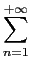
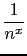

suivant: Les fonctions de Airy
monter: Les réels
précédent: Les derivées de la
Table des matières
Index
La fonction : Zeta
Zeta a comme argument un réel x.
Zeta renvoie pour x > 1 :
.
On tape :
Zeta(2)
On obtient :
pi^2/6
On tape :
Zeta(4)
On obtient :
pi^4/90
Documentation de giac écrite par Renée De Graeve